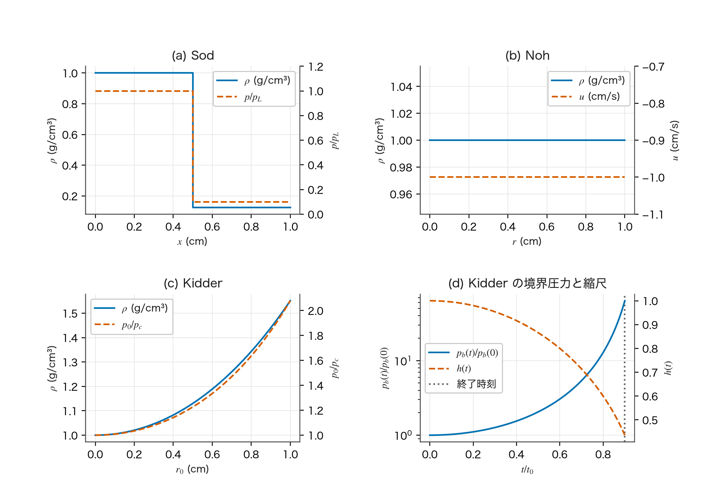
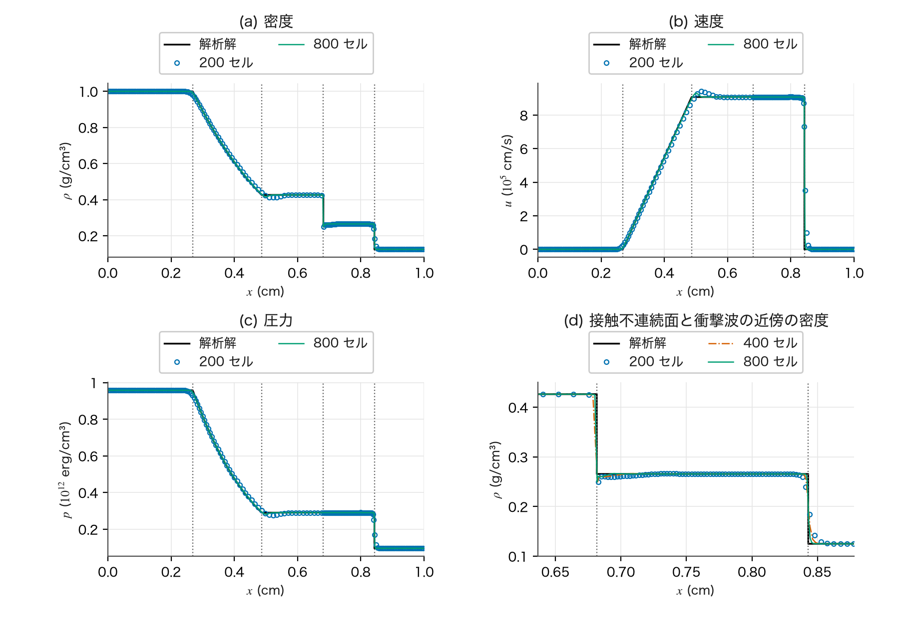
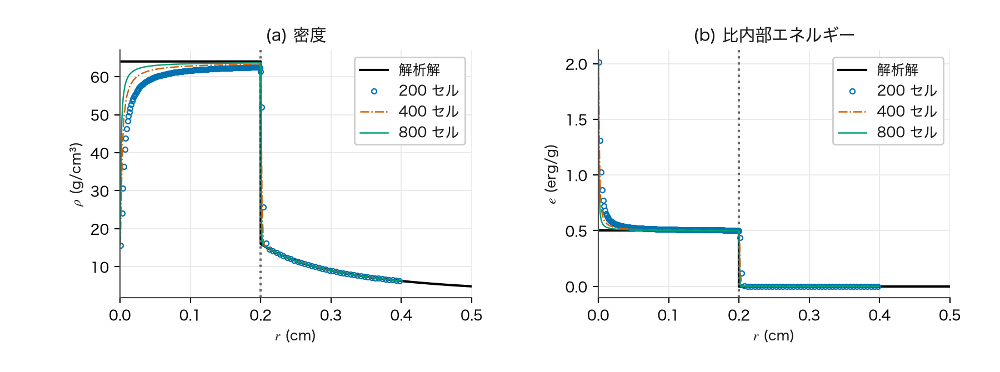
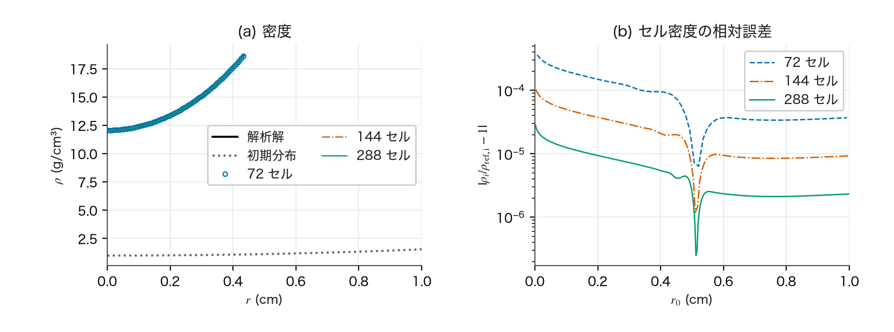
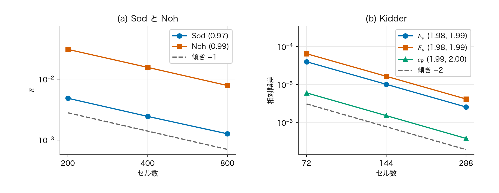
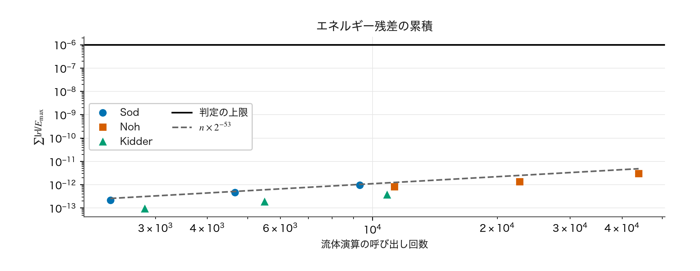

1D 流体の標準問題による検証reference
要旨
スタッガード格子（staggered grid）を用いた 1D ラグランジュ流体計算（Lagrangian hydrodynamics）を、理想気体の解析解と比較した。計算には時間積分法 RK2-Average と CSW98（Caramana–Shashkov–Whalen 1998）の制限関数付き Kuropatenko 人工粘性（limited Kuropatenko artificial viscosity）を用い、熱伝導、輻射、レーザーを無効にした。平面 Sod 衝撃波管と球対称 Noh 爆縮はそれぞれ 200、400、800 セル、Kidder の球の等エントロピー圧縮（isentropic compression）は 72、144、288 セルで計算した。観測収束次数（observed order of convergence）は Sod で 0.97（下限 0.90）、Noh で 0.99（下限 0.77）、Kidder の密度・圧力・外半径で 1.98–2.00（下限 1.7）であった。全実行で各セルの質量はビット単位で不変であり、エネルギー残差の絶対値の累積は最大総エネルギーの 3.1 × 10−12 以下（上限 10−6）であった。
はじめに
Sod の問題は、平面の流れに生じる希薄波扇（rarefaction fan）、接触不連続面（contact discontinuity）、弱い衝撃波からなる三波構造を検証する。球対称の Noh 問題では、内向きの流れが中心でせき止められ、無限強度の衝撃波が外向きに伝わる。衝撃波が通過した気体は静止し、中心付近には壁面加熱誤差（wall-heating error）が生じる [1]。Kidder の問題では、時間とともに変わる境界圧力が衝撃波を伴わない球対称圧縮を起こす [2]。この滑らかな解で、空間と時間を同時に細分化したときの 2 次収束、球対称の幾何項、境界圧力の仕事を検証する。
2026 年 11 月 21 日に NVIDIA GeForce RTX 4090 を 1 枚使って計算した。他の処理は GPU を使わず、NVIDIA Multi-Process Service（MPS）も用いなかった。実行ごとの実時間は 2.4–20.2 s であり、全実行が判定基準を満たした。実行条件とデータの採取方法は、リポジトリの tools/site_figures/ に記録している。
計算の設定
初期格子はすべて等間隔である。図 A は初期状態と Kidder の境界圧力の時間変化を示す。
| 問題 | 領域・初期状態 | 境界・終了時刻 |
|---|---|---|
| Sod | 平面、0–1 cm。隔膜は 0.5 cm。密度は左 1、右 0.125 g/cm³。温度は左 1、右 0.8 eV。初期速度は 0。比熱比 1.4、質量数 1、電離度 0。 | 両端で反射。2 × 10−7 s。Courant–Friedrichs–Lewy（CFL）数は 0.3。 |
| Noh | 球対称、半径 0–1 cm。密度 1 g/cm³、固定した中心節点を除く半径方向速度 −1 cm/s（内向き）、比熱比 5/3。試験は初期内部エネルギーを厳密に 0 とする。 | 外端は自由境界（free boundary）。エネルギー整合更新（compatible energy update）を有効にする（compatible_energy=True）。0.6 s。 |
| Kidder | 球対称、初期半径 0–1 cm。初期速度 0、比熱比 5/3。密度と圧力の初期分布は下式で与える。 | 外端に時間依存の圧力を与える。6.903 × 10−7 s。 |
Sod の初期圧力は左 9.579 × 1011、右 9.579 × 1010 erg/cm³ である。密度比 8、圧力比 10 は Mattsson と Rider [3, §5] の Sod 問題と同じである。終了時刻までに波は壁に達せず、両端のセルの圧力は初期値と相対 10−12 以内で一致した。球対称 Noh の無限強度の衝撃波には、初期圧力 0 が必要である [5, p. 4]。
$$ \begin{aligned} \rho_0(r_0)&=\rho_c(1+\beta r_0^2)^{3/2},& p_0(r_0)&=p_c[\rho_0(r_0)/\rho_c]^{5/3},\\ p_b(t)&=p_c(1+\beta R_0^2)^{5/2}/h(t)^5. \end{aligned} $$Kidder 問題で \(r_0\) は初期半径、\(\rho_0\) と \(p_0\) は初期密度と初期圧力、\(\rho_c\) と \(p_c\) は中心での初期値（1 g/cm³、1012 erg/cm³）である。係数 \(\beta\) は 0.34 cm−2、\(R_0\) は初期外半径 1 cm、\(t\) は時刻、\(p_b\) は境界圧力、\(h(t)\) は半径の縮尺である。終了時刻は収縮時間 \(t_0\) の 0.9 倍で、縮尺は 0.4359、密度は初期値の 12.07 倍になる。
各セルの質量は、初期セル内で密度を 8 点の Gauss–Legendre 求積（Gauss–Legendre quadrature）で体積積分して得る。数値計算と参照密度の計算には同じ保存質量を使う。試験では、すべての時間刻みが上限 10−8 s を厳密に下回ることを確かめる。セル数を倍にするたびに時間刻みの回数もほぼ倍になる（1,412、2,745、5,417 回）。格子幅とともに平均時間刻みが縮み、空間と時間を同時に細分化する。

解析解
Sod の厳密リーマン解（exact Riemann solution）は、左の等エントロピー希薄波扇、接触不連続面、右の衝撃波からなる。衝撃波の両側は Rankine–Hugoniot の跳躍条件（jump conditions）を満たす。中間状態の圧力 \(p_*\) は、希薄波側と衝撃波側から求めた速度が一致する条件を Newton 法で解いて得る。各反復で速度の差を圧力に関する導関数で割り、その商を現在の圧力から引く。更新後の圧力には左側の初期圧力の 10−14 倍を下限として適用する。反復は相対更新量 10−14 以下で終了し、上限 100 回に達した場合は最後の圧力を使う。
圧力は 2.90368 × 1011 erg/cm³、中間状態の速度は 9.07719 × 105 cm/s、接触不連続面の左と右の密度は 0.426319、0.265574 g/cm³ である。終了時刻の位置は、希薄波扇の先端、後端、接触不連続面、衝撃波の順に 0.268392、0.486244、0.681544、0.842975 cm である。
$$ \begin{aligned} R_s &= |u_0|t/3,\\ (\rho,u,e,p)&= \begin{cases} (64,0,1/2,64/3), & r\lt R_s,\\ ((1+|u_0|t/r)^2,u_0,0,0), & r\gt R_s \end{cases} \quad\text{(cgs)} . \end{aligned} $$Noh の解析解 [1, p. 104] で、\(R_s\) は衝撃波半径、\(u_0\) は初期速度、\(t\) は時刻、\(r\) は半径である。\(\rho\)、\(u\)、\(e\)、\(p\) は密度、半径方向速度、比内部エネルギー（specific internal energy）、圧力を表す。式の値は cgs 単位で、衝撃波前方の密度の式には初期密度 1 g/cm³ を代入している。初期速度は −1 cm/s である。終了時の衝撃波半径は 0.2 cm である。
Kidder の解析解は相似圧縮（homologous compression）である。すべての流体要素の半径が同じ比率で縮み、密度と圧力は次式で変わる [2, p. 54, Eqs. (2.2), (2.5), (2.7)]。
$$ r=r_0 h(t),\qquad \rho=\rho_0(r_0)/h(t)^3,\qquad p=p_0(r_0)/h(t)^{3\gamma}. $$\(r\) と \(r_0\) は現在と初期の半径、\(t\) は時刻、\(h(t)\) は半径の縮尺、\(\rho\) と \(p\) は現在の密度と圧力、\(\rho_0\) と \(p_0\) は初期密度と初期圧力、\(\gamma\) は比熱比である。
$$ \begin{aligned} h^{3\gamma-2}\ddot h&=-\frac{1}{\rho_0 r_0}\frac{dp_0}{dr_0}=-\frac{1}{t_0^2},\\ \frac{1}{\rho_0 r_0}\frac{dp_0}{dr_0}&=\frac{5\beta p_c}{\rho_c}, \qquad t_0=\sqrt{\frac{\rho_c}{5\beta p_c}}. \end{aligned} $$1 行目は Kidder [2, Eq. (2.8)] の運動方程式である。\(h\) は半径の縮尺、\(\ddot h\) はその時間に関する 2 階微分、\(\gamma\) は比熱比、\(r_0\) は初期半径、\(\rho_0\) と \(p_0\) は初期密度と初期圧力である。\(dp_0/dr_0\) は初期圧力の半径微分である。2 行目は初期分布を代入した結果であり、圧力と密度の中心初期値 \(p_c\)、\(\rho_c\) と係数 \(\beta\) から収縮時間 \(t_0\) が 7.67 × 10−7 s と求まる。
$$ h(t)=\sqrt{1-(t/t_0)^2},\qquad u_b=-\frac{R_0 t}{t_0^2 h(t)}. $$初期に静止し、比熱比が 5/3 の場合の解である [2, Eq. (2.13)]。\(h(t)\) は時刻 \(t\) の半径の縮尺、\(t_0\) は収縮時間、\(R_0\) は初期外半径、\(u_b\) は外端の節点速度である。終了時の \(u_b\) は解析解で −2,692,093.7 cm/s、数値解でセル数の少ない順に −2,692,100.8、−2,692,095.5、−2,692,094.2 cm/s である。
比べる量と判定
Sod と Noh の密度誤差には、セル体積で重み付けした相対 L1 誤差（relative L1 error）を使う。
$$ E=\frac{\sum_i V_i|\rho_i-\bar\rho_i|}{\sum_i V_i\bar\rho_i}. $$\(E\) は相対誤差、\(i\) はセル番号、\(V_i\) は終了時のセル体積、\(\rho_i\) は計算した密度、\(\bar\rho_i\) はそのセルで平均した解析密度である。Sod ではセルを波の位置で分け、希薄波扇では解析的に積分する。Noh では衝撃波半径でセルを分けて解析密度を体積積分し、セル体積で割る。
Kidder の密度誤差と圧力誤差にも、同じ体積重み付きの式を使う。相似圧縮したセルの参照密度と、それに対応する等エントロピー圧力を使い、外半径は解析解との相対誤差で比較する。
$$ \begin{aligned} \rho_{\rm ref,i}&=\frac{m_i}{h^3V_{0,i}}, &p_{\rm ref,i}&=p_c(\rho_{\rm ref,i}/\rho_c)^\gamma,\\ p_i&=(\gamma-1)\rho_i e_i, &e_R&=\frac{|R-hR_0|}{hR_0}. \end{aligned} $$セル \(i\) の保存質量を \(m_i\)、初期体積を \(V_{0,i}\)、参照密度と圧力を \(\rho_{\rm ref,i}\)、\(p_{\rm ref,i}\) とする。\(p_i\)、\(\rho_i\)、\(e_i\) は数値解のセル圧力、密度、比内部エネルギーである。\(p_c\)、\(\rho_c\) は初期の中心圧力と密度、\(\gamma\) は比熱比、\(h\) は終了時の半径の縮尺である。\(R\) は計算した外半径、\(R_0\) は初期外半径、\(e_R\) は外半径の相対誤差である。密度と圧力の相対誤差をそれぞれ \(E_\rho\)、\(E_p\) とする。
$$ q_{\rm shock}=\frac{\ln(E_{200}/E_{800})}{\ln 4},\qquad q_{\rm Kidder}=\log_2(E_{\rm coarse}/E_{\rm fine}). $$\(q_{\rm shock}\) は Sod または Noh の観測収束次数で、\(E_{200}\) と \(E_{800}\) は 200 セルと 800 セルの密度誤差である。\(q_{\rm Kidder}\) は Kidder の隣り合う格子対での次数で、\(E_{\rm coarse}\) と \(E_{\rm fine}\) は、密度、圧力、外半径の同じ量に対する粗い格子と細かい格子の誤差である。
不連続があると、手法の形式次数（formal order）が高くても、観測収束次数はしばしば 1 以下に下がる [4, §8.3.3.4]。Sod の下限 0.90 は 1 次から 10% 引いた値で、格子収束指数（grid convergence index）の算出で用いる観測次数と形式次数の一致の範囲を目安とした [4, §8.6.2, Table 8.1]。球対称 Noh の下限は 0.77 とする。Burnett ら [5, Table 3, Eq. (65)] が報告したロスアラモス国立研究所（Los Alamos National Laboratory）の FLAG の L1 収束次数は、理想気体で 0.900、Noble–Abel 気体で 0.771–1.045 である。Kidder の下限は 1.7 とする。Burton ら [6, Table 3 および Kidder の球の節] は、等エントロピー球殻の半径で 1.75–2.86、球の密度と圧力の L1 誤差で、一方の手法では 1.89–1.92、もう一方の手法では 1.11–1.19 を報告している。下限による片側の判定なので、形式次数を上回る観測次数も合格となる。
すべての実行で、所定の終了時刻に達すること、各セルの質量がビット単位で一致すること、エネルギー保存の基準を満たすことを確認する。Noh では初期内部エネルギーが厳密に 0 であること、Noh と Kidder では中心節点が固定されることも確認する。
結果
| 問題 | セル | 時間刻みの回数 | 誤差 | 次数 | 次数下限 | エネルギー残差比 | 実時間 (s) |
|---|---|---|---|---|---|---|---|
| Sod | 200 | 1,167 | 0.004851 | — | 0.90 | 2.19 × 10−13 | 2.39 |
| Sod | 400 | 2,328 | 0.002442 | — | 0.90 | 4.61 × 10−13 | 3.20 |
| Sod | 800 | 4,655 | 0.001264 | 0.97 | 0.90 | 9.64 × 10−13 | 5.33 |
| Noh | 200 | 5,650 | 0.03088 | — | 0.77 | 8.41 × 10−13 | 6.10 |
| Noh | 400 | 11,322 | 0.01563 | — | 0.77 | 1.35 × 10−12 | 10.75 |
| Noh | 800 | 21,919 | 0.007860 | 0.99 | 0.77 | 3.05 × 10−12 | 20.17 |
| Kidder | 72 | 1,412 | 4.008 / 6.528 / 0.6061 | — | 1.7 | 9.49 × 10−14 | 2.39 |
| Kidder | 144 | 2,745 | 1.017 / 1.655 / 0.1523 | 1.98 / 1.98 / 1.99 | 1.7 | 1.90 × 10−13 | 3.62 |
| Kidder | 288 | 5,417 | 0.2568 / 0.4174 / 0.03814 | 1.99 / 1.99 / 2.00 | 1.7 | 3.79 × 10−13 | 6.34 |
図 B では、Sod の接触不連続面と衝撃波が数セルにわたって広がる。セルを細かくすると両者の遷移幅が狭くなる。

Noh の衝撃波通過後、半径 \(0.1\,\mathrm{cm} \lt r \lt 0.18\,\mathrm{cm}\) の範囲の密度中央値は、200、400、800 セルで 62.13、63.06、63.53 g/cm³ となり、解析値 64 g/cm³ に近づく（図 C）。中心に接するセルの密度は 15.68–15.78 g/cm³、比内部エネルギーは 2.01–2.02 erg/g である。解析値はそれぞれ 64 g/cm³、0.5 erg/g であり、中心付近で過剰な加熱と密度の不足が生じる。
Noh [1, p. 88] は、人工粘性が衝撃波を有限の幅に広げると壁面加熱誤差が生じうることを示した。球対称では中心付近の過剰加熱が 1000% に達する場合があり、その大きさは人工粘性の形に依存する [1, p. 104]。中心から連続して密度が 64 g/cm³ から 10% を超えて外れる範囲は、200、400、800 セルでそれぞれ 23、22、21 セル、外端の半径は 0.03024、0.01447、0.006917 cm である。格子幅が小さくなるとこの領域も縮む。密度誤差のノルムにはこの領域を含める。

Kidder では滑らかな圧縮が続き、終了時の密度は約 12.1–18.7 g/cm³ である（図 D）。

Kidder の解析解では速度が半径に比例する。隣接セルの速度勾配が等しくなるので、数値解でも制限関数の式で使う勾配の比は 1 に近い。制限関数の値も 1 に近くなり、人工粘性による応力は小さい。
$$ r_l\simeq 1,\qquad r_r\simeq 1,\qquad \psi\simeq 1,\qquad Q=\rho W(1-\psi)|\Delta u|\simeq 0. $$\(r_l\) と \(r_r\) は内側と外側の隣接セルの速度勾配を対象セルの勾配で割った比、\(\psi\) は制限関数、\(Q\) は人工粘性応力、\(\rho\) は密度、\(W\) は Kuropatenko の波速、\(\Delta u\) はセルの両端の節点速度差である。
収束
図 E に、セル数に対する相対誤差を示す。衝撃波を含む Sod と Noh の観測次数は 1 に近い。滑らかな Kidder では、3 つの誤差がいずれもセル数を 2 倍にするごとにほぼ 4 分の 1 に減る。

質量とエネルギーの保存
ラグランジュ格子の各セルの質量は、全実行でビット単位で不変であった。演算子分割（operator splitting）では、時間刻みごとに流体演算を 2 回、半刻みずつ行う。履歴ファイルでは hydro_strang_first と hydro_strang_second で区別する。試験は各呼び出しでエネルギー残差を求め、全呼び出しについてその絶対値を足し合わせる。
\(r\) は呼び出しごとの残差、\(E_{\rm before}\) と \(E_{\rm after}\) はその前後の総エネルギー（運動エネルギーと内部エネルギーの和）、\(\Delta E_{\rm ext}\) は流体演算への外部からのエネルギーの正味の流入、\(E_{\max}\) は各流体演算の前後に記録した総エネルギーの最大値である。和は実行中のすべての流体演算を対象とする。
1D の外部入力には、境界圧力の仕事、速度を拘束した節点での仕事、下限処理（floors）によるエネルギーの追加、輻射圧の仕事が含まれる。ここで非ゼロなのは Kidder の境界圧力の仕事だけで、下限処理からの追加は全実行で 0 であった。
Kidder の総エネルギーは初期の 1.010 × 1013 erg から 6.577 × 1013 erg に増えた。境界圧力の仕事の累積 5.568 × 1013 erg が増加分に対応する。これらの値は 3 格子で有効数字 4 桁まで一致する。Sod と Noh の外部入力の累積は 0 で、総エネルギーはそれぞれ 1.3171 × 1012 erg/cm² と 2.0944 erg で一定であった。Noh の値は、半径 1 cm の球が一様に 1 cm/s で内向きに動くときの運動エネルギー（約 2π/3 erg）から、固定した中心節点が動いた場合の寄与を引いた値である。
残差比の実測値は 9.5 × 10−14 から 3.1 × 10−12 であり、呼び出し 1 回当たり約 10−16 と、倍精度の丸めの水準である（図 F）。判定上限の 10−6 は、力と仕事の対応が崩れた場合にこれらの実行で生じる残差の見積りの最小値（\(E_{\max}\) の 5 × 10−5）より 50 倍小さく、累積丸め誤差の見積り（\(E_{\max}\) の 8 × 10−9 以下）より 100 倍以上大きい。どちらも計算の条件から解析的に見積もった値で、実行では測っていない。

限界
- 対象は理想気体を用いた 1D 流体計算である。電子・イオン間のエネルギー交換、熱伝導、輻射、レーザーは検証の範囲外である。
- 初期格子は等間隔に限る。Sod の波は壁に達しないため、壁での反射は未検証である。
- Noh の壁面加熱領域は全体の密度誤差に含める。壁面加熱そのものには判定を設けていない。
- Kidder の速度は半径に比例する。速度勾配が一様でない滑らかな流れでの人工粘性の作用は未検証である。
- 実行した GPU は 1 機種である。
試験の実行
リポジトリのルートで次のいずれかを実行すると、1 つの格子で計算する。セル数は対応する環境変数で指定する。変数を省いた場合のデッキのセル数は順に 200、400、72 である。TENRYU_HYDRO_ORDER_HISTORY に出力先のディレクトリを指定すると、流体演算ごとのエネルギー記録をその下の履歴ファイルに出力する。
TENRYU_SOD_DIAG_NR=200 ./build/tenryu verify sod_planar
TENRYU_NOH_DIAG_NR=400 ./build/tenryu verify noh
TENRYU_KIDDER_DIAG_NR=72 ./build/tenryu verify kiddertests/verification/ にある 2 つの Catch2 試験プログラムが、Sod と Noh、および Kidder を分担する。それぞれ tenryu verify で各問題の 3 格子を実行し、収束次数、セル質量、球対称の中心節点、エネルギー残差を判定する。試験ケースは非表示タグ（hidden tag）[.expensive] を持ち、プログラムを引数なしで実行すると省かれる。ビルド後は CTest が他の長時間試験と共通のラベル expensive で登録し、個別に直列実行する。制限時間は各 3600 s である。
参考文献
- W. F. Noh, “Errors for calculations of strong shocks using an artificial viscosity and an artificial heat flux,” J. Comput. Phys. 72, 78–120 (1987). doi:10.1016/0021-9991(87)90074-X
- R. E. Kidder, “Theory of homogeneous isentropic compression and its application to laser fusion,” Nucl. Fusion 14, 53–60 (1974). doi:10.1088/0029-5515/14/1/008
- A. E. Mattsson and W. J. Rider, “Artificial viscosity: back to the basics,” Int. J. Numer. Methods Fluids 77, 400–417 (2015). doi:10.1002/fld.3981
- W. L. Oberkampf and C. J. Roy, Verification and Validation in Scientific Computing (Cambridge University Press, 2010). doi:10.1017/CBO9780511760396
- S. C. Burnett, K. G. Honnell, S. D. Ramsey, and R. L. Singleton Jr., “Verification Studies for the Noh Problem Using Nonideal Equations of State and Finite Strength Shocks,” J. Verif. Valid. Uncert. Quantif. 3, 021002 (2018). doi:10.1115/1.4041195
- D. E. Burton, N. R. Morgan, T. C. Carney, and M. A. Kenamond, “Reduction of dissipation in Lagrange cell-centered hydrodynamics (CCH) through corner gradient reconstruction (CGR),” J. Comput. Phys. 299, 229–280 (2015). doi:10.1016/j.jcp.2015.06.041